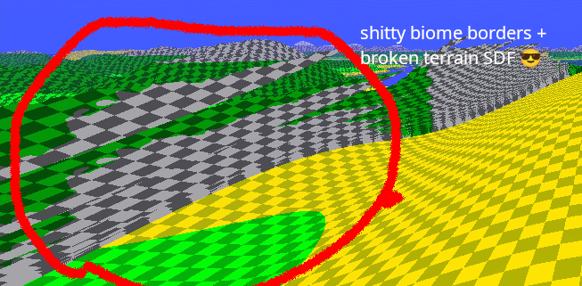
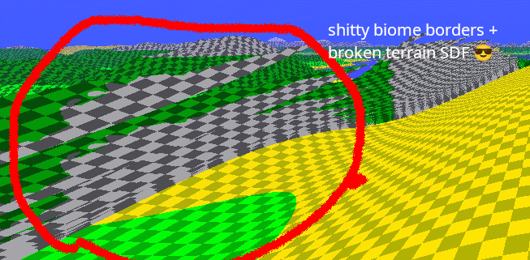

Raymarched Landscape
I recently dived into the surprisingly deep voxel rabbithole, and needed to start somewhere, so I made a meh raytracer. I got kind-of offtrack yesterday evening and converted it to a raytracer and a simple procedural world, which this cool webpage is about.


 

You can find the source code here.
Cool features:
- Fully procedural raymarched landscape + raytracing mode
- Broken terrain SDF
- Epic hacked-in reflections
- Broken borders between biomes
- Yeah! BIOMES!!!! (desert thing, mountains, oceans, default/plains)
- very cool controls
- bugged feature i kept in cool CLOUDS!